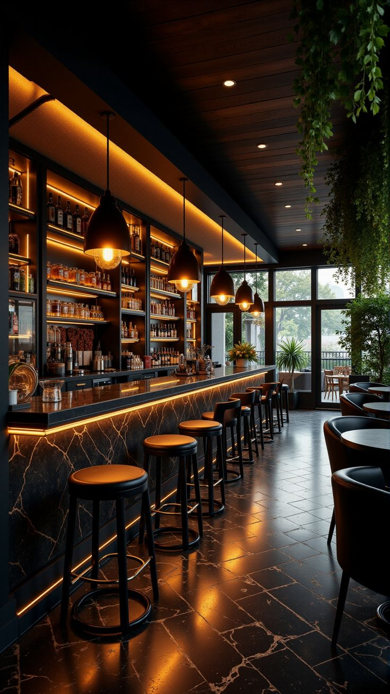
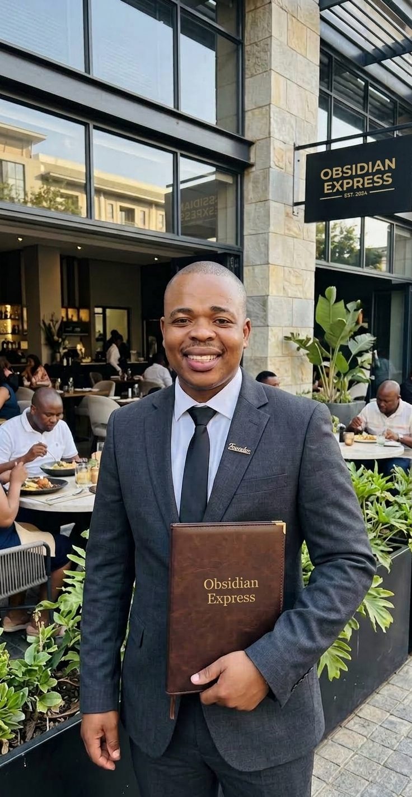
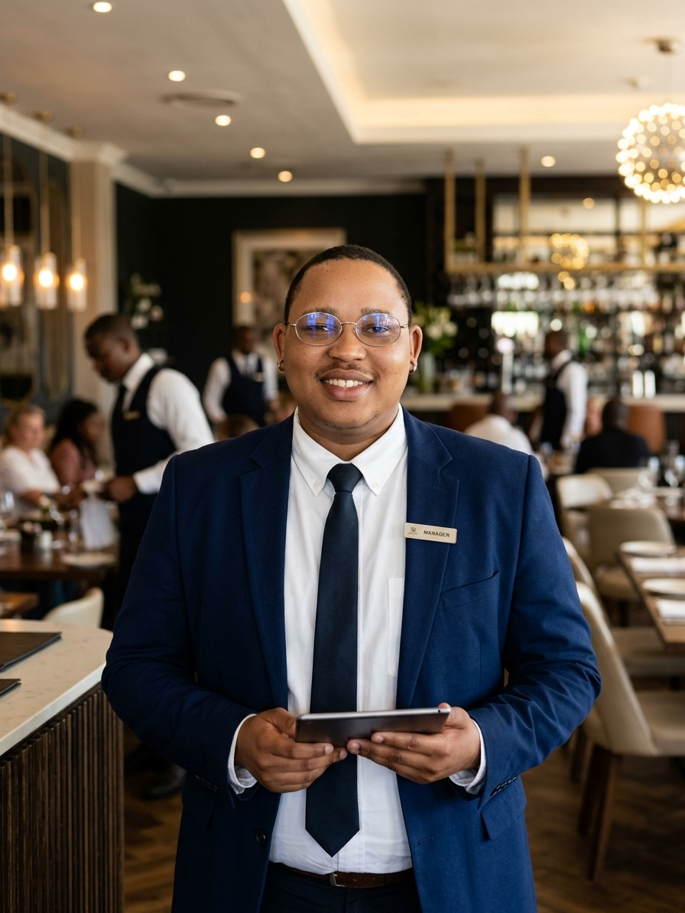
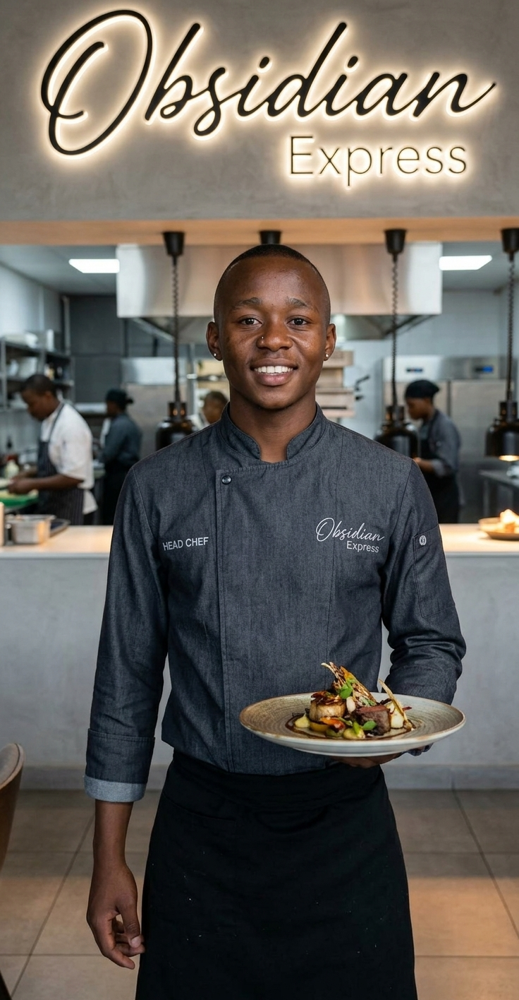

About Us
Welcome to Obsidian Express! We are a team of passionate chefs and food enthusiasts dedicated to bringing you the best of South African cuisine. Our mission is to provide a unique dining experience that combines traditional flavors with modern culinary techniques. Let us take you on a culinary journey through the heart of South Africa. Meet our team and learn about the passion behind every dish.

Our Story
Founding Member

Obsidian Express was founded in 2026 with a vision to create a dining experience that celebrates the rich culinary heritage of South Africa. Our founder Mr Athi Mavovana, who come from diverse backgrounds in the food industry, wanted to create a space where people could enjoy authentic South African dishes made with fresh, locally sourced ingredients. In the past few months, we have grown into a beloved establishment known for our commitment to quality and innovation in the kitchen. The biggest goal we have is to continue to innovate and provide the best possible dining experience for our guests while on the go as fastfood does not have to lose its elegance and quality.
Restaurant Manager

Our manager, Mr Nande Mavovana, brings years of experience in the hospitality industry and is committed to ensuring that every guest has a memorable dining experience at Obsidian Express.
Head Chef

Our head chef, Mr Yonwaba Bewana, is a culinary expert with a passion for creating innovative dishes that showcase the best of South African cuisine. With his extensive knowledge of local ingredients and flavors, he leads our kitchen team in crafting dishes that are both delicious and visually stunning.